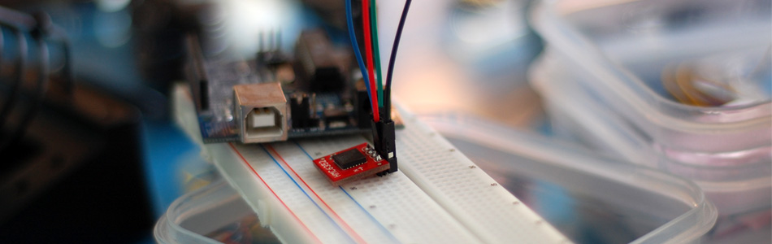

Finding your way with the HMC6352 + Arduino

When running correctly, the HMC6352 will actually repost the heading in degrees. This is great because if you have ever had an analog output compass, you know that most the battle is interpreting the reading.
{kind=link}
So, without further ado here is some code to get it working.
//All this does is read the heading from HMC6352 and spit it out via serial #include <Wire.h> int HMC6352SlaveAddress = 0x42; int HMC6352ReadAddress = 0x41; //"A" in hex, A command is: int headingValue; void setup(){ // "The Wire library uses 7 bit addresses throughout. //If you have a datasheet or sample code that uses 8 bit address, //you'll want to drop the low bit (i.e. shift the value one bit to the right), //yielding an address between 0 and 127." HMC6352SlaveAddress = HMC6352SlaveAddress >> 1; // I know 0x42 is less than 127, but this is still required Serial.begin(9600); Wire.begin(); } void loop(){ //"Get Data. Compensate and Calculate New Heading" Wire.beginTransmission(HMC6352SlaveAddress); Wire.send(HMC6352ReadAddress); // The "Get Data" command Wire.endTransmission(); //time delays required by HMC6352 upon receipt of the command //Get Data. Compensate and Calculate New Heading : 6ms delay(6); Wire.requestFrom(HMC6352SlaveAddress, 2); //get the two data bytes, MSB and LSB //"The heading output data will be the value in tenths of degrees //from zero to 3599 and provided in binary format over the two bytes." byte MSB = Wire.receive(); byte LSB = Wire.receive(); float headingSum = (MSB << 8) + LSB; //(MSB / LSB sum) float headingInt = headingSum / 10; Serial.print(headingInt); Serial.println(" degrees"); delay(100); }
Hooking it up
When hooking up an I2C device to your arduino, all you need to know is that I2C is a 2-wire serial connection, SDA (Data) and SCL (clock) - On your arduino (everything but the mega) SDA is on analog input pin 4, and SCL is on analog pin 5. On an arduino mega, SDA is digital 20, and SCL is digital 21.
Sort comings of all digital compasses
If you have never used a digital compass, you may not know that they have 2 major downfalls. One, they can not be used around any magnet of any real strength. It will really throw off the reading or just report the direction of the magnet if it is strong or close enough (though if you get creative you could use that to your advantage). And 2, without something called "tilt compensation", the compass will only be accurate held at +/- a few degrees of level. Sadly most tilt compensated compasses are 3x as expensive.
I know this tutorial was short, but hey... The long ones need more time. And hopefully it will help you find your way to get you hmc6352 up and running on the arduino. If you have any questions, need help, or want to comment, you can do so by clicking on the discussion link.
Article taken from bildr.org with minor changes - I am the original author of this content